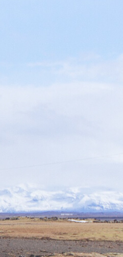
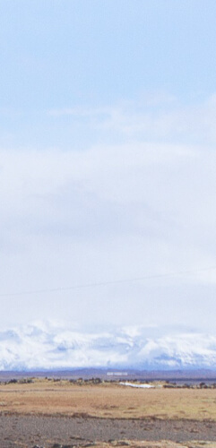

YI Smart Dash Camera
ADAS (расширенная система поддержки водителя) | 165° ультра широкоугольный объектив | 1080p 60fps высокоскоростная запись | Ночное видение | 2,7-дюймовый ЖК-экран

Лучший ассистент в автомобиле
YI Smart Dash Camera сочетает в себе множество лучших функций всех существующих цифровых камер, и обеспечивает защиту для вас и вашего автомобиля с максимальной производительностью и доступностью. Разработанная на основе ADAS (Advanced Driver Assistance System), камера анализирует данные, такие как скорость и расстояние до автомобиля впереди, и отправляет звуковые оповещения в режиме реального времени в случае отклонения от полосы движения или движения слишком близко к транспортному средству перед вами.
YI Smart Dash Camera поддерживает запись в разрешении 1920x1080p / 60 кадров в секунду, сверхвысоким разрешением 2304x1296 пикселей со скоростью 30 кадров в секунду, делая яркие и четкие записи даже на высоких скоростях.
Русская прошивка
Скачайте и установите русскую прошивку для камеры и используйте ее на понятном вам языке

ADAS — продвинутая система помощи водителю
Благодаря усовершенствованному алгоритму визуального распознавания YI Smart Dash Camera обеспечивает интеллектуальные предупреждения в режиме реального времени. Камера также оснащена предупреждающими сигналами о столкновениях, определяя расстояние до автомобиля перед вами.


Полное покрытие 3-х полос с широкоугольным объективом 165°
Чтобы уменьшить «мертвые» зоны, YI Smart Dash Camera использует широкоугольный объектив с углом 165°, который легко контролирует 3 полосы движения. Камера очень чувствительна, что позволяет делать точные и подробные записи.

 



Высокая чувствительность и ночная съемка
Качество съемки в ночное время является ключевым показателем производительности видеорегистратора. Из за усталости водителя, плохого дорожного освещения и встречного света, несчастные случаи более часто происходят ночью.
YI Smart Dash Camera имеет объектив со стеклянными линзами высокой разрешающей способности, лучшую в своем классе диафрагму F1.8 и матрицу с высокой чувствительностью 3.0×3.0 μm, чтобы гарантировать отличное качество записи в ночное время. Яркие и четкие изображения с точным цветом даже в условиях низкой освещенности без использования вспомогательного освещения.
Объектив со стеклянными линзами 6G
Линзы 6G из стекла — устойчивы к высоким температурам и оснащены фильтрами, которые блокируют инфракрасные волны и уменьшают блики. Ваши записи станут более чистыми, четкими и реалистичными.
Собрать/разобрать объектив

Диафрагма F1.8
Самая большая диафрагма F1.8 среди доступных на рынке камер подобного класса. Вместе с датчиком изображения 3.0×3.0 mm, гарантирует отличное качество даже ночью. Вы можете записывать свои ночные прогулки, не беспокоясь об освещении.

Надежная и прочная конструкция
Холодный воздух поступает через нижние вентиляционные отверстия и выходит через верхнее отверстие. Эта конструкция конвекционного охлаждения позволяет фотокамере сохранять рабочую температуру, что обеспечивает более длительный срок службы изделия. Камера YI Dash была создана с использованием огнестойких экологически чистых материалов, которые превзошли жесткие испытания на износ, истирание и коррозию гарантирую и долговечность.
Просто вставьте камеру в гнездо держателя или прикрепите ее к приборной панели вашего автомобиля. Все материалы подобраны таким образом, чтобы гарантировать, что камера останется на месте во время вождения.

Встроенный WI-FI: делитесь простым нажатием
С помощью встроенного беспроводного модуля (2.4GHz) просто откройте приложение и подключите Dash Camera через Wi-Fi для просмотра видео в реальном времени, записи или воспроизведения. С YI Smart Dash Camera вы можете легко поделиться своими роликами с друзьями в любое время, где бы вы ни находились.